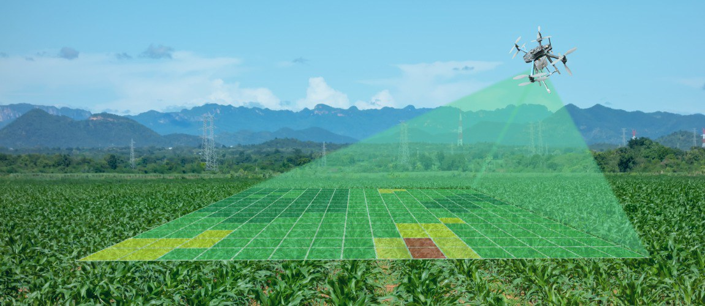

Redes Sociais


Drones na Agricultura: tudo sobre a tecnologia que está mudando o setor
A agricultura mudou! A forma como os processos acontecem hoje e como as plantações modernas são gerenciadas se distanciaram bastante da forma como era praticada há alguns anos.Os avanços tecnológicos alcançaram os campos agrícolas e eles deram uma nova cara para a agricultura.
Surgiu assim a agricultura de precisão. Com ela vieram diversos benefícios para o setor agrícola mundial e nacional.
Nesse post apresentaremos um guia sobre uma dessas principais ferramentas utilizadas na agricultura de precisão e que está inovando no setor: o uso de drones na agricultura!
A tecnologia já está se destacando em diversos setores. Algumas empresas como a gigante Amazon já utilizam drones para a realização de entregas, outras companhias do ramo de segurança e monitoramento empregam estas pequenas aeronaves não tripuladas para vigilância e operações táticas.
Além destas utilizações, os drones têm sido largamente empregados em publicidades, redes de televisão, fotografias e diversos outros hobbies.
E ainda acredita-se que nos próximos anos o uso de drones na agricultura esteja altamente difundido entre os produtores — até mesmo nos pequenos produtores rurais.
Vamos entender o que são os drones, como eles funcionam, seus principais benefícios, as suas funcionalidades, entre outras coisas.
Acompanhe nesse post tudo sobre Drones na Agricultura:
O que são drones?
A palavra drone possui origem inglesa e traduzindo significa “zangão”. Esse nome foi dado às famosas pequenas aeronaves que a cada dia mais têm ganhado espaço no cenário mundial.
Essa tecnologia que antes era utilizada somente para fins militares, atualmente é aplicada em diversos segmentos da cadeia produtiva e até mesmo utilizada para fins pessoais e para entretenimento. As pequenas aeronaves que recebem o nome de drones nada mais são do que Veículos Aéreos Não Tripulados (VANT), proveniente do inglês Unmanned Aerial Vehicle (UAV).
Para entender o que é um drone ou VANT, a melhor associação que pode ser feita são os antigos carrinhos de controle remoto. As pequenas aeronaves não tripuladas funcionam de acordo com o mesmo princípio dos brinquedos, elas são controladas através de um controle remoto que envia os comandos para a aeronave por meio de ondas de rádio.
Desta forma, os drones não possuem um “piloto”, mas sim uma pessoa controlando-o de forma remota.
Essas aeronaves não tripuladas surgiram na década de 60 quando a marinha dos Estados Unidos verificou a necessidade de observar e monitorar os inimigos sem colocar seus soldados em risco.
Durante muitos anos o governo americano afirmou não utilizar esse tipo de tecnologia, quando em 1973 admitiu utilizar VANTs nos campos de batalha.
Inicialmente os drones utilizavam câmeras para gravação e reconhecimento de território, atualmente são equipados com armas e sensores de alta precisão tendo seu uso difundido nas mais diversas áreas.
